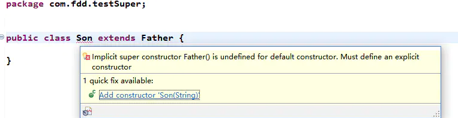
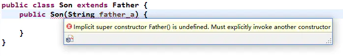
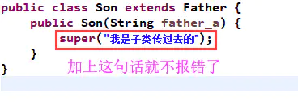

深入分析java中的关键字super
概念
它是一个指代变量，用于在子类中指代父类对象。
应用范围
super的三种使用情况：
- 访问父类的方法。
- 调用父类构造方法。
- 访问父类中的隐藏成员变量。
使用
访问父类中的方法
第一步：定义father类
public class Father {
private String father_a;
public Father() {
father_a="父亲：曹操";
System.out.println("我是，"+father_a);
}
void dosomething(){
System.out.println("曹操：挟天子以令诸侯");
}
}
第二步：定义son类
public class Son extends Father {
private String son_a;
public Son() {
super();
son_a="儿子：曹冲";
System.out.println("我是，"+son_a);
}
@Override
void dosomething() {
//访问父类中的方法
super.dosomething();
}
}
第三步：测试一下
public class Test {
public static void main(String[] args) {
Son son=new Son();
son.dosomething();
}
}
//output：
//我是，父亲：曹操
//我是，儿子：曹冲
//曹操：挟天子以令诸侯
我们会发现调用了super.dosomething();就会执行父类的dosomething方法。
重写父类变量
我们还拿上面的例子来说明一下：
第一步：定义父类
public class Father {
protected String father_a="我是父亲曹操的变量";
void dosomething(){
System.out.println("曹操：挟天子以令诸侯");
}
}
第二步：定义子类
public class Son extends Father {
private String son_a="我是儿子曹冲的变量";
@Override
void dosomething() {
//super.father_a可以调用父类的变量（public和protected）
System.out.println(super.father_a);
System.out.println(son_a);
}
}
第三步：测试一下
public class Test {
public static void main(String[] args) {
Son son=new Son();
son.dosomething();
}
}
//output
//我是父亲曹操的变量
//我是儿子曹冲的变量
子类构造方法调用
第一步：定义父类
public class Father {
protected String father_a="我是父亲曹操的变量";
//无参构造器
public Father() {
System.out.println("无参构造器:"+father_a);
}
//有参构造器
public Father(String father_a) {
this.father_a = father_a;
System.out.println("有参构造器:"+father_a);
}
}
第二步：定义子类
public class Son extends Father {
public Son() {
//在子类中调用父类构造器
//第一种：super（执行父类中的无参构造器，默认可以不写）
//super();
//第二种：执行父类中的有参构造器，参数写到super中就可以了
super("子类传给父类的");
System.out.println("子类的构造方法");
}
}
第三步：测试
public class Test {
public static void main(String[] args) {
Son son=new Son();
}
}
//output
//有参构造器:子类传给父类的
//子类的构造方法
从上面我们可以看到，其实是有两种情况
第一种：直接调用super()会执行父类的无参构造方法，可以默认不写。
第二种：使用super(“父类参数”),调用父类有参构造方法，把参数传递进来就好。
这两种情况还是比较简单的，不过还有几种比较特殊的情况需要我们去注意， 网上的大神也都提到了，你可以试着去了解一下。
注意问题一：父类只有带参构造器（无参构造器没有），子类必须有相同参数的构造方法
我们还是使用代码去测试一下
首先我们定义一个父类：只有一个带参构造器
public class Father {
protected String father_a="我是父亲曹操的变量";
//有参构造器
public Father(String father_a) {
this.father_a = father_a;
System.out.println("有参构造器:"+father_a);
}
}
下面我们看看在子类中，如果什么都没有会出现什么

意思已经很明确了，我们的子类必须要有一个显示的构造方法去匹配父类。
注意问题二：子类必须有相同参数的构造方法，并且还需要调用super(参数)
在注意问题一种我们知道，在子类中需要定义一个构造方法去匹配父类构造方法， 现在我们在子类中去定义一下不就解决了嘛，但随之而来由出来了个问题，我们看看。

为什么会出现犯错误呢？其实我们只是定义了Son类的无参构造器， 其默认调用super(),他只是调用了父类的无参构造器，并没有调用有参构造器， 因此需要我们再去调用一下有参的。 我们把son类中的构造方法中加上一句话就好了。
